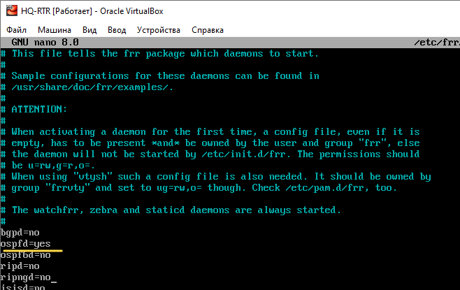
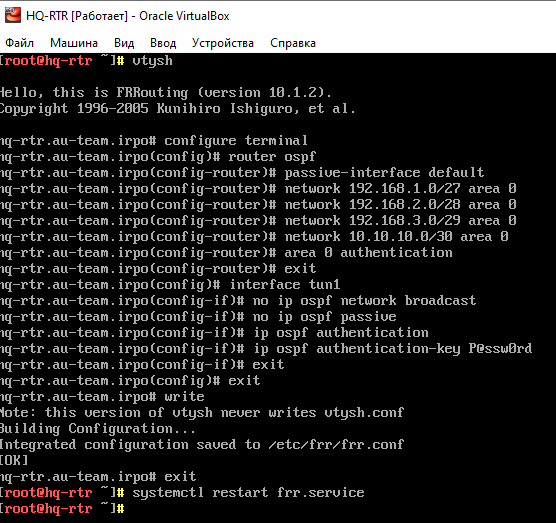
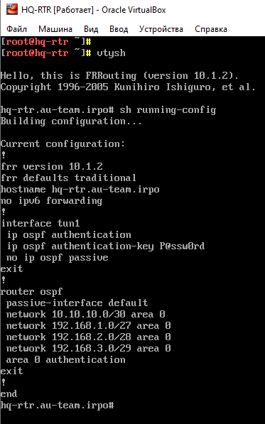
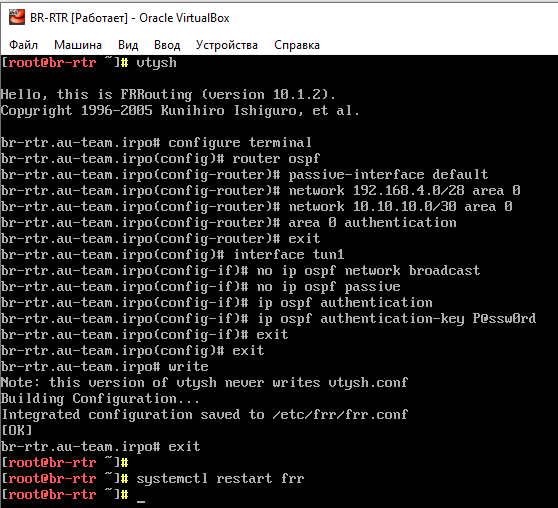
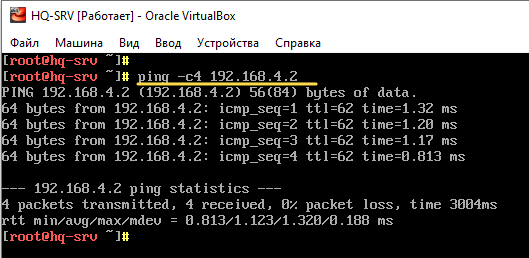
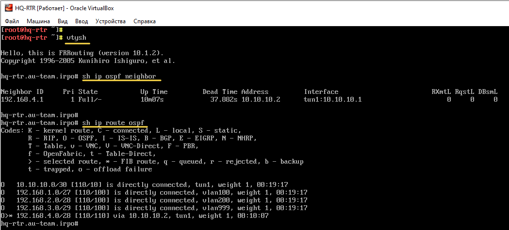
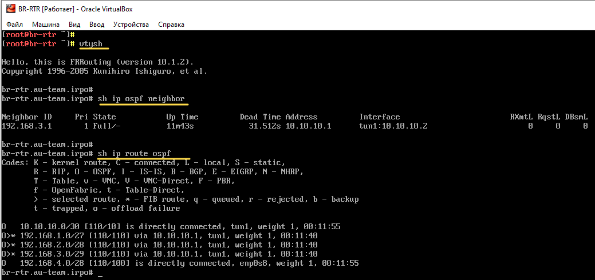
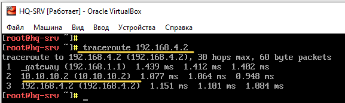
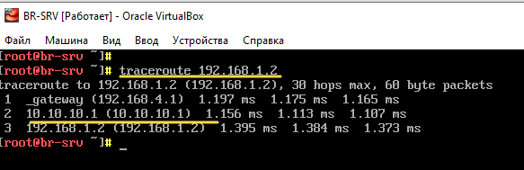

¶ Задание
¶ 7. Обеспечьте динамическую маршрутизацию на маршрутизаторах HQ-RTR и BR-RTR: сети одного офиса должны быть доступны из другого офиса и наоборот. Для обеспечения динамической маршрутизации используйте link state протокол на усмотрение участника:
- Разрешите выбранный протокол только на интерфейсах ip туннеля
- Маршрутизаторы должны делиться маршрутами только друг с другом
- Обеспечьте защиту выбранного протокола посредством парольной защиты
- Сведения о настройке и защите протокола занесите в отчёт.
¶ Реализация
Произведём настройку
OSPFчерезGREтуннель между HQ-RTR и BR-RTR.
Для настройкиOSPFиспользуется пакетfrr, реализующий на устройстве динамическую маршрутизацию.
¶ 7.1 Настройка протокола OSPF на HQ-RTR
Устанавливаем пакет frr
Для настройки внутренней динамической маршрутизации для IPv4 используем протокол OSPFv2. Для настройки OSPF необходимо включить соответствующий демон в конфигурации /etc/frr/daemons
В конфигурационном файле /etc/frr/daemons необходимо активировать выбранный протокол для дальнейшей реализации его настройки:

Включаем и добавляем в автозагрузку службу frr
Переходим в интерфейс управление симуляцией FRR при помощи vtysh (аналог cisco)
Входим в режим глобальной конфигурации
Переходим в режим конфигурации OSPFv2
Переводим все интерфейсы в пассивный режим
Объявляем локальную сети офиса HQ (сеть VLAN100, VLAN200, VLAN999) и сеть (GRE-туннеля)
Включаем аутентификацию для области
Выходим из режима конфигурации OSPFv2
Переходим в режим конфигурирования интерфейса tun1
Туннельный интерфейс tun1 делаем активным, для установления соседства с BR-RTR и обмена внутренними маршрутами. Разрешаем выбранный протокол только на интерфейсах ip туннеля
Переводим интерфейс tun1 в активный режим. Разрешаем выбранный протокол только на интерфейсах ip туннеля
Включаем аутентификацию с открытым паролем P@ssw0rd
Выходим из режима конфигурации и tun1 и режима глобальной конфигурации
Сохраняем текущую конфигурацию
Выходим из vtysh
Перезапускаем frr
Настройки OSPFv2 на HQ-RTR

Посмотреть текущую конфигурацию можно с помощью следующих команд

¶ 7.2 Настройка протокола OSPF на BR-RTR
Настройки
OSPFv2на BR-RTR производится аналогично HQ-RTR.
Необходимо изменить –Объявляемые сети в OSPFv2(Объявляем локальную сети офиса BR и сеть GRE-туннеля)
Настройки OSPFv2 на BR-RTR

Перезапускаем frr
¶ 7.3 Проверка OSPF
Пингуем HQ-SRV -> BR-SRV по локальным адресам

Получение информацию о соседях и маршруты, полученные от процесса OSPF (Опционально)
Переходим в интерфейс управление симуляцией FRR при помощи vtysh
Получить информацию о соседях и установленных отношениях соседства.
Показать маршруты, полученные от процесса OSPF.
HQ-RTR

BR-RTR

Проверяем что выбранный протокол разрешен только на интерфейсах ip туннеля
Можно проверить только после выполнения пункта 8 задания
Выполняем трассировку маршрута HQ-SRV –> BR-SRV и BR-SRV –> HQ-SRV

